Cátedra 8: Capacidad Calórica
Cuánto calor necesita un sistema para subir un grado de temperatura, cómo depende del proceso (a volumen o presión constante), y la relación $C_P - C_V = Nk_B$ para gas ideal.
Temas que cubre
- Definición de capacidad calórica: $C = \bar{\delta}Q / dT$
- Capacidad calórica a volumen constante: $C_V = (\partial U/\partial T)_V$
- Capacidad calórica a presión constante: $C_P = C_V + Nk_B$
- Razón de capacidades: $\gamma = C_P/C_V$
- Gas ideal monoatómico: $C_V = \frac{3}{2}Nk_B$; diatómico: $C_V = \frac{5}{2}Nk_B$
- Proceso adiabático reversible: $PV^\gamma = \text{cte}$
- La energía interna del gas ideal no depende del volumen
Conceptos clave
Capacidad calórica a $V$ constante, $C_V$
Al calentar a volumen constante, no hay trabajo ($\bar{\delta}W = 0$), así que todo el calor va a energía interna: $\bar{\delta}Q = dU$. Por eso $C_V = (\partial U/\partial T)_V$. Para gas ideal monoatómico: $C_V = \frac{3}{2}Nk_B$.
Capacidad calórica a $P$ constante, $C_P$
Al calentar a presión constante, el gas también se expande y realiza trabajo. Se necesita más calor que en el proceso isocórico: $C_P > C_V$. La diferencia $C_P - C_V = Nk_B$ corresponde exactamente al trabajo de expansión.
Razón $\gamma = C_P/C_V$
Para gas monoatómico: $\gamma = \frac{5/2}{3/2} = \frac{5}{3} \approx 1.67$. Para diatómico (con rotación): $\gamma = \frac{7/2}{5/2} = \frac{7}{5} = 1.4$. Este parámetro controla la pendiente de las adiabáticas en el diagrama $P$-$V$.
Proceso adiabático
Cuando $\bar{\delta}Q = 0$ y el proceso es reversible, la temperatura cambia con el volumen siguiendo $TV^{\gamma-1} = \text{cte}$ y $PV^\gamma = \text{cte}$. La adiabática es más empinada que la isotérmica en el diagrama $P$-$V$.
Fórmulas fundamentales


Qué hay que entender
- $C_P > C_V$ siempre: a presión constante el gas tiene que "pagar" trabajo extra para expandirse.
- Para el gas ideal $C_V$ no depende de $T$ (a temperaturas moderadas). Esto es consecuencia de que $U = \frac{3}{2}Nk_BT$ es lineal en $T$.
- El número de grados de libertad determina $C_V$: cada grado de libertad aporta $\frac{1}{2}Nk_B$. Monoatómico: 3 traslacionales; diatómico: 3 traslacionales + 2 rotacionales = 5.
- Para derivar $PV^\gamma = \text{cte}$: usar $dU = \bar{\delta}W$ (adiabático) + $dU = C_V\,dT$ + $PV = Nk_BT$.
- La adiabática es más "dura" que la isotérmica: al comprimir adiabáticamente, la presión sube más porque la temperatura también sube.